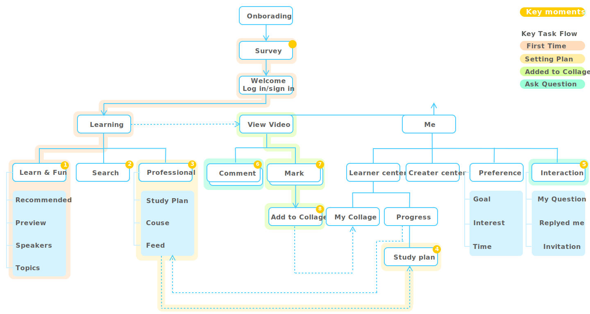

Wasa Bean
Research Methods Interview, Observation, Survey, Persona, User Journey, Usability Test
Tools Sketch, Axure

This project aims to help Chinese design students to easily find a suitable software tutorial. Many Chinese universities don’t provide enough design software training, students have to learn by themselves. However, the current learning experience is not very friendly, it makes many students be afraid of studying software. The final idea comes from the way of students doing design works. The app, Wasa Bean, will provide detail software process to help students learn from design work which interests them.

RESEARCH & INTERVIEW
The research work started with my class- mates and other design college students, totally 38 people. Net learning as one of the primary form of study design software it is already. But the experience of net learning is barely satisfactory.

PROBLEM ANALYSIS
Imitation is a great way to learn software. Most of students start with imitate others’ design work. However online website doesn’t provide too much information to help them learn others’ work.


PERSONA

IDEA
An online design community for student to find design works with tutorial. Any student also could submit their design work and tutorial for others to earn money.


PROTOTYPE

SOLUTION
Information Architecture


KEY TASKS